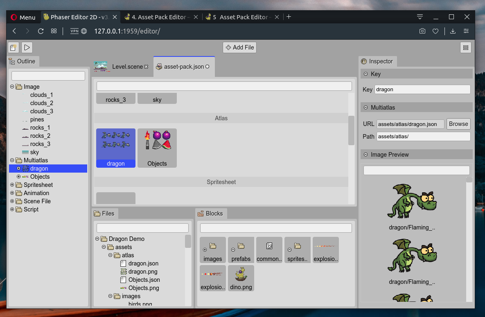
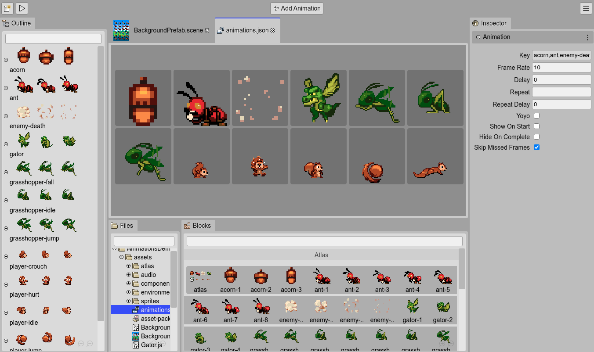
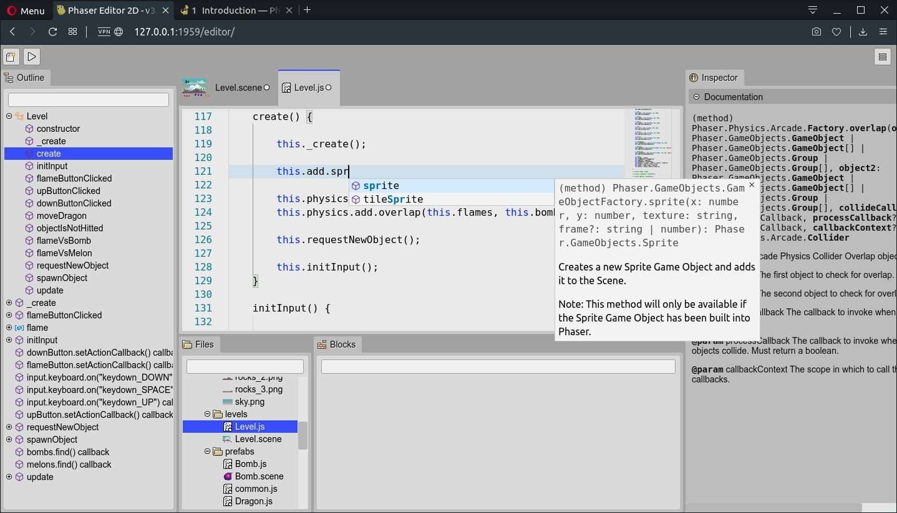
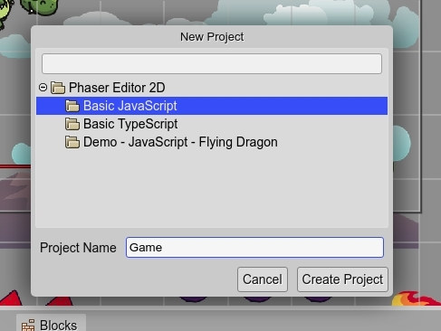
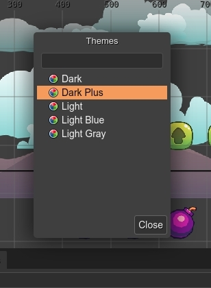

Main features
The current version of Phaser Editor 2D is pretty new. We released it with a few basic features.
Asset Pack Editor
The Asset Pack Editor allows you to import the asset files into an Asset Pack file. This pack file is used by other components of the IDE, like the Scene Editor and is a built-in Phaser format. This means, that you can load it in any Phaser game, no matter if it was created by Phaser Editor 2D or another tool.
Often, Phaser game developers have to write by hand the code to load the asset files. With the Asset Pack Editor this process is fully visual and assisted.
Scene Editor
The Scene Editor is a visual tool to create Phaser scenes or levels by positioning images and other types of objects.
The images can be taken from different sources like single images, sprite-sheets, or texture maps. You can create a different type of objects like sprites, images, tile sprites, bitmap texts, texts, containers, and lists. Also, you can create your custom type of object using prefabs and create reusable user components.
The Scene Editor uses a custom format, but the editor files are compiled into perfect readable Phaser code, compatible with any Phaser game, and using only Phaser built-in API.
Learn more about the Scene Editor

Animations Editor
The Animations Editor helps to create sprite-based animations. It creates a JSON file that can be loaded into the game using the Phaser Loader API or using the Asset Pack Editor.
A handy tool provided by the Animations Editor is the automatic creation of the animations.
Code Editor
An advanced coding tool is out of the scope of this version of the IDE. There are free and commercial third-party coding editors that work pretty well, with special mention of Visual Studio Code.
Phaser Editor 2D can be integrated very well with Visual Studio Code. The project templates include the Visual Studio Code the configuration and type files required to get a project ready for Visual Studio Code.
However, many users may want to try the editor just as it is and quickly create prototypes of games. For those users, we included in the IDE a basic code tooling for JavaScript, TypeScript, HTML, CSS, and JSON files. These tools are based on the Monaco editor, the one that is used by Visual Studio Code.
You can edit the code of your game and get nice features like auto-completion across multiple files, an outline of the code, documentation of the language elements, and others.
Project templates
Phaser is a framework and it does not require a particular layout for your projects. A Phaser game is just a web application, and there are a lot of options to organize and build your game files.
Phaser Editor 2D does not require any special project layout neither, however, it provides a couple of project templates that help you to do an initial setup of your game. For example, it adds configuration files ready to be used by Visual Studio Code and other files commonly used by the IDE, like an Asset Pack file or a first Scene Editor file.
Also, you can create projects based on demos, and learn Phaser and Phaser Editor 2D.
Color themes
Since Phaser Editor 2D is a web application, it is very easy to create color themes via CSS. The IDE includes a couple of themes and you can implement your own.
Extensible
The IDE is built on top of Colibri (hummingbird in English), a small framework we did especially for Phaser Editor 2D. This framework is inspired by the Eclipse Rich Client Platform and allows to build desktop-like applications (based on editors, views, commands, remote storage, etc…) using modules and an extension mechanism, that is used to create new editors, commands, menus, color themes, game objects, etc…
We should write a Plugin Development Guide to target these concepts.
Lightweight and cross-platform
The IDE is available in the main Operating Systems: Windows, macOS, and Linux.
The big part (the client application) should run in any modern browser (tested on Google Chrome, Firefox, and Opera), and is served by a small native program, available for the mentioned platforms.
The client application is accelerated by the browser and all the I/O operations are asynchronous. It feels lightweight in terms of operability, but it may push the browser to consume an extra 150MB/300MB of memory. It depends the amount of images present in the project.
On the desktop, it loads pretty fast. In a network, the fetching of all the resources may delay, it depends on your network speed.
Ready for the desktop and the cloud
The editor is distributed as two different products, the Phaser Editor 2D Core and the Phaser Editor 2D All-in-One.
The Phaser Editor 2D Core can be integrated into a modern web development stack and cloud-based development environments (like Gitpod and GitHub Codespaces).
The Phaser Editor 2D All-in-One is a desktop application that provides a traditional IDE-like experience.